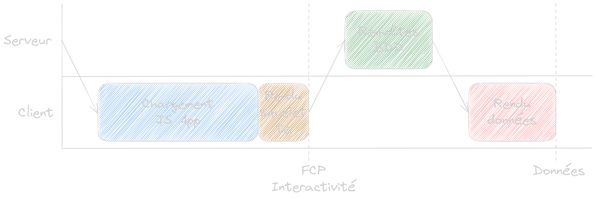
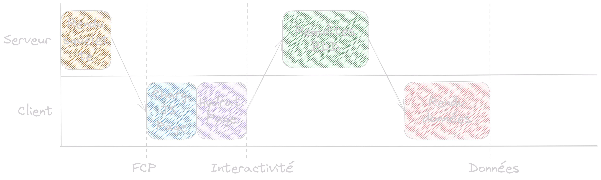
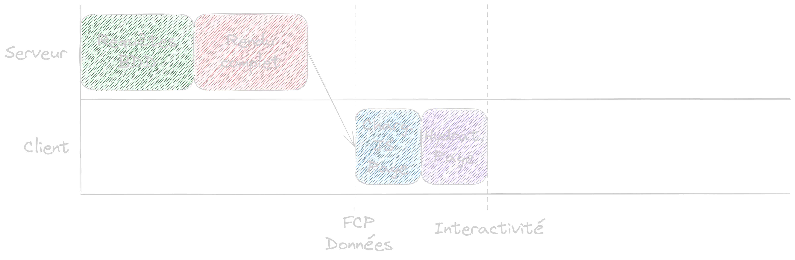
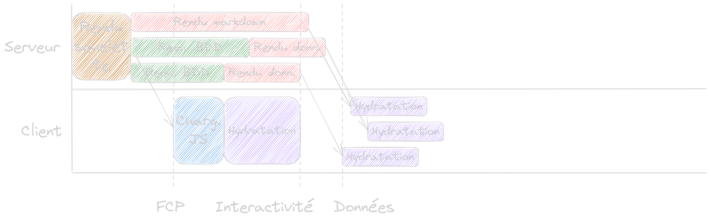

Quand React confond
client et serveur
Présentation des nouvautés apportées par React 18 côté serveur
Par Gérald Gounot
Qui suis-je ?
Gérald Gounot
Développeur full-stack freelance
Spécialisé JavaScript, TypeScript, React
Objectif de la présentation
Comprendre les nouvelles fonctionnalités apportées par React 18
Notamment : SSR, Suspense, Server Components, Server Actions
Sommaire
3 parties
I. Server Side Rendering
- SPA
- SSR
- SSR avec Suspense
II. Server Components
- Server Component vs Client Component
- Avantages
- Limitations
- Quand les utiliser
III. Server Actions
- Présentation
- Avantages
Single Page App (SPA)
Server Side Rendering (SSR)
(sans données)
Server Side Rendering (SSR)
(avec données)
Suspense
Solution tout en un pour les composants lents
Utilisation de Suspense
SSR avec Suspense
Server Components
(différence avec les Client Components)
| Client Comp. | rendu sur le client ou sur le serveur |
|---|---|
| Server Comp. | rendu sur le serveur uniquement |
Par défaut : Server Component
Client Component marqué par 'use client' en début de fichier
Implications
- Statique : pas de useState, useContext, useEffet, etc.
- Ne peut utiliser l'API du navigateur (window, localStorage, etc.)
- Contexte serveur : accès direct à la base de données
- Aucun JavaScript envoyé au navigateur
Exemple de server Component
Quand les utiliser
| Server Components | éléments statiques, données |
|---|---|
| Client Components | éléments interactifs |
Un composant non marqué par 'use client' est du type de son parent
'use client' marque la frontière entre serveur et client
Les Server Components peuvent importer tout type de composant
Les Server Components ne peuvent pas être importés par des Client Components
Mais ils peuvent être passés en props
Et les mutations dans tout ça ?
Comme avant : requête sur une route API
La barrière client-serveur est toujours là...
Server Actions
Équivalent du Server Component pour les mutations
Fonction serveur appelée depuis le client
Server Action
Contexte : Server Component
Server Action
Contexte : Client Component ou Server Component
Avantages
- Même DX qu'avec les Server Components
- Fonctionne avec les Server et les Client Components
- Type safe
- Fonctionne sans JavaScript
Conclusion
- UX améliorée : app plus légère et rapide
- DX améliorée : barrière client-serveur réduite au minimum
- Ce nouveau paradigme va encore évoluer
Merci pour votre attention !
Des questions ?
Meetup JavaScript prévu le 17 octobre à la Mêlée !
 /in/ggounot
gerald@gounot.eu
/in/ggounot
gerald@gounot.eu